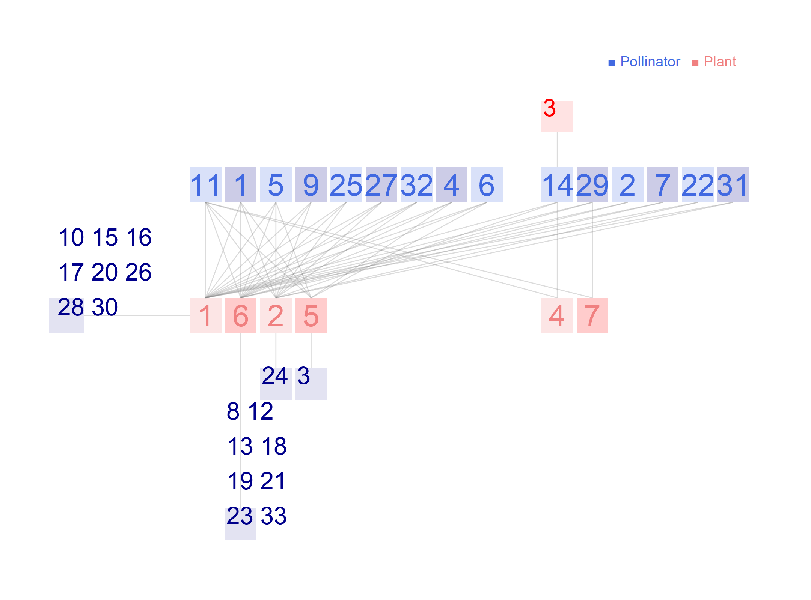

Network: M_PL_032

Pollinator 1 Andrena.carlini, 2 Andrena.cressoni, 3 Andrena.erythronii, 4 Andrena.forbesii, 5 Andrena.irgeniae, 6 Andrena.mansonii, 7 Andrena.miserabilis, 8 Andrena.personata, 9 Andrena.rugosa, 10 Andrena.sp1.M_PL_032, 11 Apis.mellifera, 12 Augochlora.pura, 13 Augochlorella.striata, 14 Bombus.griseocollis, 15 Carposcalis.obscura, 16 Ceratina.metallica, 17 Dialictus.coeruleus, 18 Dialictus.imitatus, 19 Dialictus.oblongus, 20 Dialictus.obscurus, 21 Dialictus.zephyrus, 22 Eristalis.dimidiatus, 23 Erylaeus.macroupinensis, 24 Halictus.confusus, 25 Helophilus.fasciatus, 26 Lasioglossum.forbesii, 27 Melanostoma.sp1.M_PL_032, 28 Mesograpta.marginata, 29 Metasyrphus.americanus, 30 Nomada.luteola, 31 Syrphus.sp1.M_PL_032, 32 Syrphus.torvus, 33Xylota.nemorum
Plant
1 Claytonia virginica, 2 Dentaria laciniata, 3 Dicentra canadensis, 4 Dicentra cucullaria, 5 Erythronium albidum, 6 Isopyrum biternatum, 7Sanguinaria canadensis
Schemske, D. W., M. F. Willson, M. N. Melampy, L. J. Miller, L. Verner, K. M. Schemske, and L. B. Best. 1978. Flowering Ecology of Some Spring Woodland Herbs. Ecology 59:351-366. Brownfield, Illinois, USA